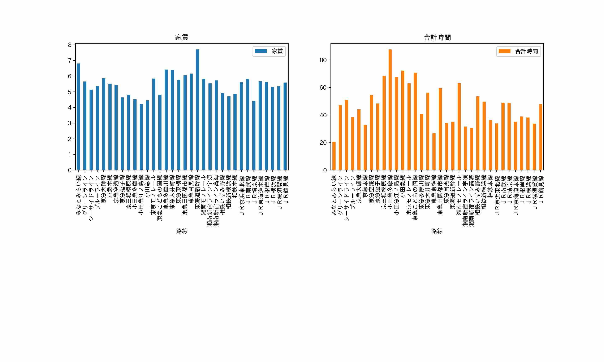

大学生の一人暮らしということでワンルームに絞り、路線ごとの家賃と合計時間の平均をグラフにした。

- import pandas as pd # データ分析に用いるライブラリ
- import matplotlib.pyplot as plt # グラフ表示に用いるライブラリ
- pd.set_option('display.unicode.east_asian_width', True) # 表示のずれを少し緩和
- plt.rcParams['font.family'] = 'IPAexGothic' # グラフ表示におけるフォントの指定
- data_path = "./data.csv"
- df_data = pd.read_csv(data_path, encoding="utf-8-sig")
- print(df_data.columns)
- df_mean = df_data[df_data.loc[:, "間取り"] == "ワンルーム"]
- df_mean.groupby("路線").mean().loc[:, ["家賃", "合計時間"]].plot.bar(subplots=True,
- layout=(2, 2),
- figsize=(16, 10))
- plt.show()
移動時間重視（家賃6万円以下、合計時間30分以下）であれば、東急東横線、湘南新宿ライン宇須、湘南新宿ライン高海がおすすめである（表の出し方が分かりませんでした）。
家賃重視（家賃5万円以下、合計時間50分以下）であれば、京急逗子線、相鉄新横浜線、相鉄本線、JR埼京線がおすすめである。（こちらも表が分かりませんでした）。